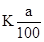
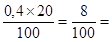

МИНИСТЕРСТВО
МОНТАЖНЫХ И СПЕЦИАЛЬНЫХ
СТРОИТЕЛЬНЫХ РАБОТ СССР
Утверждаю
заместитель министра монтажных и
специальных строительных работ СССР
Брюнин В. Ф.
6 декабря 1982 г.
ИНСТРУКЦИЯ
ПО ПРИМЕНЕНИЮ ОРГАНОСИЛИКАТНОЙ КОМПОЗИЦИИ
ДЛЯ ЗАЩИТНЫХ ПОКРЫТИЙ СТАЛЬНЫХ ТРУБОПРОВОДОВ
ТЕПЛОВЫХ СЕТЕЙ
ВСН 436-82
ММСС СССР
Москва - 1983
Настоящая инструкция разработана Всесоюзным научно-исследовательским институтом гидромеханизации, санитарно-технический и специальных работ (ВНИИГС) на основании приказа № 254 п. 13 от 10 июля 1979 г. Минмонтажспецстроя СССР "О мерах по сокращению потерь тепла в зданиях жилищно-гражданского и производственного назначения и тепловых сетях" и является практическим руководством по применению органосиликатной композиции ОС-51-03 зеленая ТУ 84-725-78 для защитных покрытий трубопроводов тепловых сетей в соответствии со СНиП II-36-73. После высыхания (отверждения) покрытия из органосиликатной композиции ОС-52-03 не токсичны. В зависимости от технологии нанесения и отверждения покрытий, конкретных условий эксплуатации и качества проведения работ срок службы покрытий достигает двадцати пяти лет.
При разработке инструкции были использованы и учтены требования инструктивных материалов: СНиП 1-1-74 "Система нормативных документов", СНиП II-28-73 "Защита строительных конструкций от коррозии". СНиП-II-36-73 "Тепловые сети", СНиП II-45-75 "Магистральные трубопроводы", СНиП II-31-74 "Водоснабжение. Наружные сети и сооружения", СНиП II-30-76 "Внутренний водопровод и канализация зданий, СНиП II-92-76 "Вспомогательные здания и помещения промышленных предприятия", "Инструкция по применению защитных покрытий тепловой изоляции промышленного оборудования и трубопроводов" ВСН 389-77/MMСС СССР, СНиП III-4-80 "Техника безопасности в строительстве", "Инструкция по применению органосиликатных композиций для противокоррозионной защиты металлических и других строительных конструкций, технологического оборудования и для декоративной отделки строительных материалов и фасадов зданий" РСН 40-81, "Инструкция по защите тепловых сетей от электрохимической коррозии".
Составители: заведующий лабораторией противокоррозионных работ А. П. Харченко, канд. техн. наук Т. А. Шитова.
|
Министерство монтажных и специальных строительных работ СССР |
Ведомственные строительные нормы |
ВСН 436-82 |
|
Инструкция по применению органосиликатной композиции для защитных покрытий стальных трубопроводов тепловых сетей |
ММСС СССР |
1.1. Настоящая инструкция предусматривает применение органосиликатной композиции ОС-51-03 зеленая (холодного отверждения) для противокоррозионной защиты наружной поверхности стальных труб тепловых сетей (температура теплоносителя до 180 °С), прокладываемых в непроходимых каналах, туннелях и на эстакадах, а также для ремонта органосиликатного покрытия.
1.2. Инструкция определяет области применения композиции ОС-51-03:
в заводских условиях;
при строительно-монтажных работах;
для устранения дефектов органосиликатного покрытия, возникающих при транспортировании и монтаже труб;
для восстановления органосиликатного покрытия, нарушенного при эксплуатации.
1.3. Органосиликатную композицию ОС-51-03 можно наносить при положительной и отрицательной температуре окружающего воздуха. Отверждение покрытий на основе ОС-51-03 происходит в естественных условиях (холодное отверждение) при температурах от минус 20 до плюс 40 °С с введением отвердителя тетрабутоксититана (ТБТ) по ТУ 6-09-2738-75, классификация чистый.
Правила введения отвердителя и режимы отверждения указаны в пп. 4.3-4.7 и разделе 6 настоящей инструкции.
1.4. Перечень материалов и оборудования, необходимых для нанесения покрытий согласно настоящей инструкции, приведен в приложениях 1 и 2 настоящей инструкции.
1.5. Расход композиции ОС-51-03 (при рабочей вязкости согласно п. 6.4 настоящей инструкции) для четырехслойного покрытия общей толщиной 250-350 мкм в зависимости от метода нанесения, качества исполнения работ и с учетом потерь составляет 450-700 г/м2. Расход композиции при однослойном покрытии толщиной 110-120 мкм составляет 145-155 г/м2.
|
Внесены Всесоюзным научно-исследовательским институтом гидромеханизации, санитарно-технических и специальных строительных работ Минмонтажспецстроя СССР |
Утверждены Минмонтажспецстроем СССР "6" декабря 1982 г. |
Срок введения "1" июля 1982 г. |
1.6. В приложении 3 настоящей инструкции приведено краткое описание работы мобильной технологической установки 52-44 для окраски отдельных труб органосиликатной композицией ОС-51-03 в условиях строительно-монтажной площадки, а также для механизированной подготовки поверхности трубопроводов (удаление продуктов коррозии и обезжиривание).
2.2. Композицию ОС-51-03 холодного отверждения поставляют в комплекте с отвердителем ТБТ. Отвердитель вводят в композицию перед началом окрасочных работ (см. пп. 4.3-4.7 настоящей инструкции).
Фильтрация композиции ОС-51-03 согласно ТУ-84-725-78 не допускается.
2.4. Условная вязкость поступающей с завода-изготовителя композиции ОС-51-03 при 20 °С по вискозиметру В3-4 не менее 18 с, содержание нелетучих веществ не менее 45 %. Условную вязкость определяют по ГОСТ 8420-74, а содержание нелетучих веществ - по ГОСТ 17537-72.
Примечание. При определении содержания нелетучих веществ навеску композиции ОС-51-03 сушат при температуре 180 ± 5 °С в течение 3 ч.
2.5. Покрытие на основе композиции ОС-51-03 после отверждения на воздухе при температуре от +15 - +35 °С в течение 72 ч согласно ТУ 82-725-78 должно удовлетворять следующим требованиям:
отсутствие растрескивания и пузырения (контролируется визуально);
прочность покрытия при ударе по прибору У-2 должна быть не менее 25 кгс·см. Определение прочности производят по ГОСТ 15140-78 при толщине покрытия 150 - 250 мкм.
3.2. Каждая партия композиции ОС-51-03 сопровождается паспортом, удостоверяющим ее качество и соответствие требованиям ТУ 84-725-78.
3.3. Органосиликатная композиция ОС-51-03 для холодного отверждения покрытий поставляется в комплекте с отвердителем ТБТ.
3.5. Гарантийный срок хранения композиции ОС-51-03 при соблюдении требований ТУ 84-725-78 и настоящий инструкции 1 год с момента изготовления. По истечении срока хранения композиция ОС-51-03 подлежит проверке на соответствие требованиям технических условий.
4.1. Перед использованием композицию ОС-51-03 перемешивают до полной однородности по всему объему (отсутствие комьев, осадка) в таре завода-изготовителя одним из указанных в п. 2.3 настоящей инструкции способов. При непрерывном механическом перемешивании операция длится не менее 2 ч, при перемешивании барботированием воздухом или инертным газом - не менее 20 мин. Фильтрование композиции ОС-51-03 не допускается.
4.2. Допускается смешивание (усреднение) композиций различных партий. После перемешивания согласно пп. 2.3 и 4.1 настоящей инструкции композицию сливают в общую емкость и перемешивают до полной однородности.
Перед введением отвердителя композицию разбавляют толуолом до вязкости 18 - 25 с по вискозиметру В3-4 в соотношении 1:20. Необходимое количество отвердителя рассчитывают по формуле
С = 
С - количество отвердителя (кг или л), а - количество взятой композиции (кг), К - взятое процентное содержание отвердителя.
Пример расчета
Для работы взято 20 кг композиции ОС-51-03 с вязкостью по В3-4 18 - 25 с. Содержание отвердителя в композиции 0,4 %.
Масса или объем отвердителя будет:
С = 
Примечание: удельный вес отвердителя при 20 °С равен 1 г/см3.
4.4. Отвешивают или берут по объему рассчитанное количество отвердителя и разбавляют толуолом согласно п. 4.3 настоящей инструкции. К перемешанной органосиликатной композиции приливают раствор отвердителя и повторно перемешивают согласно пп. 2.3 и 4.1 настоящей инструкции в течение 1 ч.
4.5. Вязкость композиция ОС-51-03 проверяют по вискозиметру В3-4 при температуре воздуха, при которой будут наносить покрытие. Если вязкость превышает рабочую (см. п. 6.4 настоящей инструкции), композицию с введенным отвердителем разбавляют толуолом и снова перемешивают согласно п. 4.4 настоящей инструкции.
4.6. Композиция ОС-51-03 с введенным отвердителем ТБТ пригодна для работы в течение 48 ч.
5.1. Перед нанесением покрытия поверхность стальных трубопроводов очищают от продуктов коррозии и окалины механическим способом (степень очистки 2 согласно ГОСТ 9.402-80).
5.3. После механической очистки наружную поверхность трубопроводов обдувают сжатым воздухом.
5.4. Обезжиривание и окрашивание следует производить после механической обработки поверхности трубопроводов не позднее чем через 6 ч при работе на открытом воздухе и не позднее чем через 24 ч при работе в помещении.
5.5. Наружную поверхность трубопроводов обезжиривают уайт-спиритом с помощью валикового устройства или кисти. Степень обезжиривания - первая по ГОСТ 9.402-80 (п. 5.5.1. табл. 23).
5.6. После обезжиривания поверхность сушат в течение 30 мин при температуре окружающего воздуха 20 °С; при более низкой температуре время сушки необходимо увеличить.
6.1. Композицию ОС-51-03 наносят на подготовленную (см. раздел 5 настоящей инструкции) и сухую поверхность трубопроводов непосредственно после операции обезжиривания растворителем и сушки при температуре окружающего воздуха не ниже минус 20 и не выше плюс 40 °С.
6.2. Композиция ОС-51-03 должна быть подготовлена для нанесения согласно пп. 4.1-4.7. настоящей инструкции. Необходимо учитывать срок жизнеспособности композиции после введения отвердителя ТБТ (48 ч).
6.4. На поверхность труб покрытие можно наносить кистью, валиком, пневматическим или безвоздушным распылителем. Рабочая вязкость органосиликатной композиции ОС-51-03 (после введения отвердителя) по вискозиметру В3-4, в зависимости от выбранного метода нанесения, должна быть в пределах: при пневматическом распылении 18 - 25 с, при безвоздушном 35 - 45 с, при нанесении кистью или валиком 30 - 35 с. Если вязкость композиции отличается от требуемой, ее доводят до рабочей в соответствии с указаниями п. 4.5 настоящей инструкции.
6.5. При нанесении композиции ОС-51-03 на поверхность труб краскораспылителем давление подаваемого воздуха должно быть в пределах 0,9 - 1,5 · 105 Па. Диаметр сопла 1,5 - 2 мм. Расстояние сопла от окрашиваемой поверхности зависит от давления воздуха и принимается равным 150 - 300 мм.
6.6. Перед нанесением покрытия в монтажных условиях трубы подают на мобильную технологическую установку 52-44 (см. приложение 3 настоящей инструкции). Оптимальная частота вращения зависит от диаметра трубы, ее определяют экспериментально. При диаметре трубы 150 - 200 мм частота вращения 80 - 120 об/мин. При ремонте органосиликатного покрытия на небольших участках поверхности композицию ОС-51-03 наносят кистью или валиком, при ремонте больших участков - краскораспылителем.
6.7. В соответствии с главой СНиП III-36-73 "Тепловые сети" (п. 12.1 и приложение 8) при холодном отверждении покрытий с отвердителем ТБТ на поверхность труб тепловых сетей наносят четыре слоя органосиликатной композиции ОС-51-03. После отверждения толщина покрытия должна составлять 200 - 350 мкм.
6.9. В процессе холодного отверждения покрытий в течение 72 ч трубы не должны касаться друг друга. Упаковка (обрешетка) и транспортирование труб, защищенных композицией ОС-51-03 холодного отверждения, разрешается не ранее чем через 72 ч после нанесения покрытия.
6.10. Контроль за исполнением работ осуществляют с соблюдением требований раздела 9 настоящей инструкции.
6.11. При обнаружении дефектов или повреждения покрытия допускается дополнительное нанесение покрытия на поврежденные участки с соблюдением требований пп. 6.1 - 6.9 настоящей инструкции.
Примечание. При прокладке трубопроводов в непроходных каналах для защиты можно использовать органосиликатную композицию ОС-51-03 с формированием покрытия методом термообработки. При этом отвердитель в композицию не вводят. Покрытие наносят в три слоя толщиной 240 - 260 мкм. При трехслойном покрытии расход композиции составляет 340 - 530 г/м2 (рабочая вязкость по п. 6.4 настоящей инструкции), однослойном - согласно п. 1.5 настоящей инструкции. Правила приемки и хранения композиции должны соответствовать пп. 2.1, 2.3 - 2.5 и пп. 3.1 - 3.2, 3.4 - 3.5 настоящей инструкции. К употреблению композицию готовят согласно пп. 4.1 - 4.2, 4.7 настоящей инструкции.
Перед нанесением покрытия поверхность трубопроводов подготавливают согласно разделу 5. После нанесения трехслойного покрытия (см. пп. 6.1, 6.3 - 6.6 и 6.8 настоящей инструкции) проводят отверждение термообработкой по режиму: подъем температуры до 60 °С и выдержка в течение 2 ч, подъем температуры до 100 °С и выдержка в течение 2 ч, подъем температуры до 150 °С и выдержка в течение 2 ч, подъем температуры до 200°С и выдержка в течение 2 ч, охлаждение до 20 - 30 °С в течение 30 мин. При отверждении окрашенные трубы не должны касаться друг друга.
Отвержденное термообработкой покрытие контролируют согласно пп. 6.10 - 6.11 настоящей инструкции.
Для покрытия горячего отверждения ремонт покрытия, сварка, контроль качества выполняемых работ и требования к технике безопасности должны соответствовать разделам 7 - 10 настоящей инструкции.
7.1. При возобновлении (ремонте) покрытия органосиликатную композицию ОС-51-03 наносят на дефектные места методом холодного отверждения согласно пп. 6.1 - 6.9 настоящей инструкции. Требования раздела 5 настоящей инструкции к подготовке поверхности выполняют тогда, когда покрытие возобновляют на больших участках, требующих повторной подготовки поверхности металла к нанесению покрытия (поверхность металла оголена и покрыта продуктами коррозии).
7.2. Если покрытие повреждено без оголения металла или металл оголен, но на нем нет ржавчины, поверхность очищают от грязи и пыли, сушат, при необходимости обезжиривают и наносят новое покрытие согласно требованиям пп. 6.1 - 6.9 настоящей инструкции. Количество наносимых слоев должно обеспечивать требуемую толщину покрытия (см. п. 6.7 настоящей инструкции).
7.4. Восстанавливать покрытие трубопроводов на монтажной площадке следует только в сухую погоду. При выпадении атмосферных осадков места нанесения покрытия следует защищать от дождя и снега.
8.1. При монтаже трубопроводов допустимо проведение дуговой электросварки по покрытию. Начало сварного шва (зажигание дуги) и места заземления площадью 0,5 - 1,0 см2 очищают механическим способом, далее сварку ведут по покрытию.
8.2. После сварки со сварного шва удаляют окалину (см. п. 5.2 настоящей инструкции), в околошовной зоне счищают поврежденное при сварке покрытие (см. п. 7.3 настоящей инструкции) и поверхность металла обезжиривают. На шов и околошовную зону (шириной 2 - 3 см) наносят покрытие холодного отверждения (как при ремонте покрытия) в соответствии с требованиями пп. 7.1 - 7.4 настоящей инструкции.
9.1. Контролю подлежат:
качество композиции ОС-51-03, поступающей с завода-изготовителя, на соответствие требованиям ТУ-84-725-78;
соблюдение правил подготовки композиции ОС-51-03 перед нанесением покрытия на соответствие требованиям раздела 4 настоящей инструкции;
качество подготовки металлической поверхности трубопровода на соответствие требованиям пп. 5.1, 5.2 и 6.1 настоящей инструкции;
соблюдение технологии нанесения и отверждения покрытия на соответствие требованиям раздела 6;
качество нанесенных и отвержденных покрытий на образце при поступлении композиции ОС-51-03 с завода-изготовителя по п. 2.5 настоящей инструкции и на готовом изделии.
9.2. Готовое покрытие на наружной поверхности контролируют по следующим показателям: общая толщина (толщиномер ИТП-1) - 250 - 350 мкм, внешний вид (визуально) - отсутствие растрескивания, пузырей, сколов, выбоин и т.п.
9.3. Рабочую вязкость композиции ОС-51-03 на соответствие п. 6.4 настоящей инструкции контролируют на мосте нанесения покрытия после введения отвердителя.
9.4. Дефектные участки покрытия исправляют согласно правилам раздела 7 настоящей инструкции.
9.5. Контроль за подготовкой поверхности и нанесением каждого слоя покрытия осуществляет заказчик. Результаты контроля фиксируют в журнале производства работ.
9.6. По результатам контроля подготовительных стадий технологии (подготовка композиции ОС-51-03 к использованию, подготовка поверхности трубопроводов к окраске) дается разрешение на нанесение покрытия.
10.1. Композиция ОС-51-03 зеленая в качестве растворителя полимеров содержит до 55 % толуола, который является взрывоопасным и токсичным веществом (категория А). Поэтому при работе с композицией ОС-51-03 (подготовка композиции к использованию - раздел 4, нанесение покрытий и их отверждение - раздел 6 и соответствующие пункты в разделах 7-9) необходимо строго руководствоваться "Указаниями по определению категории производства от взрывной, взрывопожарной и пожатой опасности" СН-463-74, "Санитарными нормами проектирования промышленных предприятий" СН-245-71; ГОСТ 12.1.005-76 "Воздух рабочей зоны. Общие санитарно-гигиенические требования" и ГОСТ 12.1.007-76 "Вредные вещества. Классификация и общие требования безопасности".
При работе с отвердителем ТБТ следует соблюдать правила техники безопасности, изложенные в ТУ 6-09-2738-75.
10.2. В заводских условиях композицию следует наносить в специально отведенных помещениях. Посты нанесения, сушки и отверждения покрытий, а также обезжиривания поверхности металла органическим растворителем должны быть оборудованы приточно-вытяжной вентиляцией. Электропроводка и электрооборудование должны бить выполнены во взрывобезопасном исполнении. Воздушную среду рабочих помещений контролируют на содержание токсичных и пожароопасных веществ согласно ГОСТ 12.1.005-76.
10.3. В цехах или на участках, где работают с композицией ОС-51-03, должны быть предусмотрены: гардеробная, респираторная, помещение и устройства для обезжиривания спецодежды, умывальная, душевая. Нормы на указанные помещения описаны в СНиП II-92-76, пп. 3.1 - 3.39 группа производственных помещений IIIб.
10.4. При работе с композицией ОС-51-03 (в помещении или на открытом воздухе) необходимо пользоваться средствами индивидуальной защиты: спецодеждой (комбинезоны или халаты, резиновые или клеенчатые фартуки и рукавицы), биологическими перчатками, респираторами РМП-62, шланговыми респираторами ШР, защитными очками ПО-2. Для мытья рук рекомендуется использовать мыло МДМ.
10.5. При работе с композицией ОС-51-03 категорически запрещается курить, применять открытый огонь и инструмент, который может вызвать искрообразование.
10.6. При нанесении покрытий пневмораспылением перед началом работ аппараты и шланги следует проверить и испытать на давление, превышающее в 1,5 раза рабочее. Манометры на пневматических окрасочных аппаратах должны быть опломбированы.
10.7. Количество композиции ОС-51-03 и толуола, находящихся на месте производства работ, не должно превышать сменной потребности.
10.8. К работе с композицией ОС-51-03 допускаются лица, прошедшие специальное обучение.
10.9. Лица, работающие с композицией ОС-51-03, перед поступлением на работу и в дальнейшем должны периодически проходить медицинский осмотр (приказ Минздрава СССР № 400 от 30 мая 1969 г., приложение № 1, п. 41).
10.10. Лица, занятые пескоструйными или дробеструйными работами, подлежат медицинскому осмотру перед поступлением на работу и периодически (приказ Минздрава СССР № 400 от 30 мая 1969 г., приложение № 1, п. 46).
10.11. Перечень профессий рабочих (занятых подготовкой композиции ОС-51-03 к использованию и нанесением покрытий), к которым предъявляются дополнительные требования по безопасности труда, устанавливается министерствами (ведомствами) по согласованию с соответствующими отраслевыми центральными комитетами профсоюза на основе примерного перечня, приведенного в приложении 7 к СНиП III-4-80 "Техника безопасности в строительстве".
10.12. Очистку поверхностей пескоструйными или дробеструйными аппаратами производят с соблюдением требований "Правил устройства и безопасной эксплуатации сосудов, работающих под давлением" Госгортехнадзора СССР. Рабочие-пескоструйщики обеспечиваются скафандрами или шлемами с принудительной подачей чистого воздуха, а также спецодеждой.
10.13. При нанесении композиции ОС-51-03 ручными распылителями следует соблюдать санитарные правила, изложенные в "Санитарных правилах при окрасочных работах с применением ручных распылителей" № 991-72 Минздрава СССР, Москва, 1974 г.
10.14. При работе с композицией ОС-51-03, подготовке поверхности к нанесению покрытия, пескоструйной (дробеструйной) очистке и сварочных работах, кроме требований раздела 10 настоящей инструкции, следует выполнять требования: СНиП III-4-80* "Техника безопасности в строительстве" (пп. 2.9, 2.13, 2.15, 2.31, 2.32, 2.46, 2.47, 16.4, 16.7, приложение 8 пп. 9.14, 15), "Санитарных правил при окрасочных работах с применением ручных распылителей" № 991 - 72 Минздрава СССР, 1972 г.; "Правил устройства и безопасной эксплуатации сосудов, работающих под давлением" Госгортехнадзора СССР, 1970 г.; ГОСТ 12.3.002-75, ГОСТ 12.3.003-75, ГОСТ 12.3.006-75, ГОСТ 12.3.016-79, ГОСТ 12.1.007-76 "Вредные вещества. Классификация и общие требования безопасности" и ГОСТ 12.1.005-76 "Воздух рабочей зоны. Общие санитарно-гигиенические требования".
|
Наименование оборудования |
Марка, ГОСТ, ТУ |
Для какой цели |
|
1 |
2 |
3 |
|
Вискозиметр ВЗ-4 |
ГОСТ 9070-59 |
Для определения вязкости композиции, для подготовки отвердителя к введению в композицию |
|
Секундомер |
ГОСТ 5072-67 |
|
|
Стаканы стеклянные химические |
- |
|
|
Эксикатор |
- |
Для определения сухого остатка материала |
|
Термостат на 200 - 250 °С |
ГОСТ 17537-72 |
|
|
Боксы с крышками |
- |
|
|
Весы аналитические |
- |
|
|
Маятниковый прибор М-3 |
ГОСТ 5233-67 |
Для определения твердости покрытий |
|
Стеклянные пластинки 9 ´ 12 см (фотопластинки) |
ГОСТ 683-52 |
|
|
Прибор У-2 |
- |
Для определения прочности покрытий при ударе |
|
Металлические пластинки |
||
|
Ручная дрель с лопастной мешалкой, |
- |
Для перемешивания органо-силикатной композиции при подготовке материала |
|
глубинный вибратор, |
И-41 или И-50 |
|
|
валки, |
- |
|
|
"пьяная бочка" или |
- |
|
|
приспособление для барботирования воздухом с компрессором |
Компрессор С-22 |
|
|
Смеситель вместимостью 40 л |
С-383 |
Для перемешивания материала при больших объемах работ и усредненных партий |
|
Весы технические или мензурка с ценой деления 0,1 мл |
- |
Для подготовки отвердителя к введению в композицию |
|
Пескоструйный или дробеструйный аппарат Компрессор |
ПА-60, ПА-140 и др. ДЖ-9М и др. |
Для механической очистки поверхности труб от продуктов коррозии |
|
Шлифовальная машина (ручная) |
С-475 (с гибким валом) |
Для очистки окалины сварных швов |
|
Кисти, ветошь |
- |
Для обезжиривания металлической поверхности труб, для нанесения композиции |
|
Краскораспылители |
0,17А, 0,32, 0,15, СО-71, КР-10 с Æ сопла 1,8 -2,2 мм |
|
|
Нагнетательный бачок |
С-764 |
|
|
Толщиномеры |
ИТП-1, МТА-2, МИП-10 |
Для контроля толщины покрытия |
|
Журнал |
- |
Для фиксации качества работ |
|
Наименование материалов |
Марка, ГОСТ, ТУ |
Цель |
|
Толуол |
ГОСТ 5789-76 |
Для разбавления органосиликатной композиции |
|
Композиция ОС-51-03 зеленая |
ТУ 84-725-78 |
Для нанесения покрытия |
|
Отвердитель - тетрабутексититан (ТБТ) |
ТУ 6-09-2738-75 |
Для холодного отверждения органосиликатной композиции |
|
Комбинезоны или халаты хлопчатобумажные |
- |
Для соблюдения правил техники безопасности и охраны труда |
|
Резиновые или клеенчатые фартуки, рукавицы |
- |
|
|
Респираторы с фильтрами на толуол |
- |
|
|
Биологические перчатки |
- |
|
|
Мыло |
МДМ |
|
|
Шлем |
МИОТ |
|
|
Средства пожаротушения |
- |
|
|
Оборудование для приточно-вытяжной вентиляции |
- |
|
|
Уайт-спирит |
ГОСТ 3134-78 |
Для обезжиривания металлической поверхности труб |
Для окрасочных работ трубопроводов тепловых сетей в условиях монтажно-строительного производства с успехом может быть использована мобильная технологическая установка 52-44. Преимущества установки - нанесение органосиликатного покрытия методом распыления, механизированные операции подготовки металлической поверхности трубопроводов (удаление продуктов коррозии и обезжиривание). Технологическая установка (см. рисунок) состоит из устройств и механизмов, установленных в последовательности технологического процесса. Во время работы установкой управляют с пульта управления, расположенного на рабочем месте (на подвижной тележке, двигающейся вдоль вращающейся трубы). Цепь управления блокирована для предупреждения аварийных ситуаций.
Мобильная технологическая установка 52-44:
1 - передвижное устройство установки; 2 - пульт управления; 3 - щеточный механизм очистки; 4 - валковый механизм обезжиривания; 5 - краскораспылитель КА-1 (на кронштейне тележки); 6 - механизм вращения трубы; 7 - стеллаж с отсекателем
Установка работает в нижеприведенной последовательности. С расходного стеллажа трубы подают отсекателями на роликовое устройство для вращения трубы. Вдоль вращающейся трубы перемещается тележка с рабочим местом оператора и пультам управления установкой. Частоту вращения труб и скорость тележки подбирает оператор в зависимости от диаметра обрабатываемой трубы. Первым в работу включается механизм щеточной очистки труб (степень очистки регулируется прижимом металлических щеток с помощью пневмоцилиндров), тележка перемещается вдоль вращающейся трубы в прямом и обратной направлениях. После очистки вращающуюся трубу обезжиривают прижимным валиковым устройством. При сильном загрязнении трубы операцию очистки повторяют. После обезжиривания поверхность труб сушат (длительность сушки при положительной температуре воздуха 20 - 30 мин, рекомендуется обдувка воздухом обезжиренной трубы).
Хорошо перемешанную композицию ОС-51-03 с введенным отвердителем наносят на абсолютно сухую очищенную трубу автоматическим краскораспылителем КА-1 со щелевидным соплом, установленным на кронштейне передвигающейся тележки.
Чтобы дать возможность подсохнуть нанесенному слою, движение тележки в обратном направлении предусмотрено вхолостую. Операцию повторяют четыре раза, после чего труба поступает на приемный стеллаж для сушки. Для бесперебойной работы подающего и принимающего устройств партия обрабатываемых труб должна иметь одинаковую длину (6 - 12 м).
Установка достаточно мобильна, сборку и ее наладку выполняют в течение нескольких дней; она может быть применена на любой строительной площадке.
СОДЕРЖАНИЕ